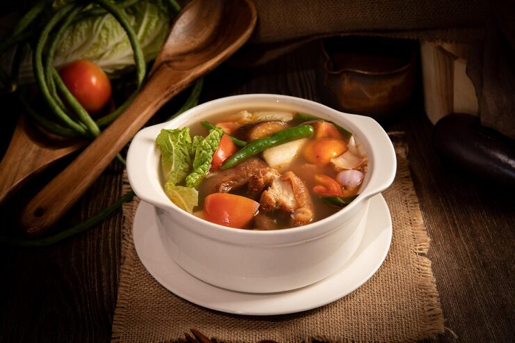

Sinigang Recipe

Description
Sinigang is a Filipino sour soup made with tamarind, meat or seafood, and
mixed vegetables. Its tangy flavor and comforting warmth make it a beloved
staple in Filipino cuisine.
Ingredients
- 1 lb pork (belly or ribs), cut into chunks
- 1 medium onion, quartered
- 2 tomatoes, quartered
- 1 pack sinigang mix (or fresh tamarind)
- 4 cups water
- 1 cup radish, sliced
- 1 cup eggplant, sliced
- 1 cup string beans, cut
- 1 cup water spinach (kangkong)
- Fish sauce and salt to taste
Steps
- Boil pork in water until tender.
- Add onions and tomatoes; simmer for 5 minutes.
- Stir in radish, eggplant, and string beans; cook until tender.
- Add sinigang mix (or tamarind), season with fish sauce and salt.
- Add kangkong last; cook for 1-2 minutes.
- Serve hot with rice.